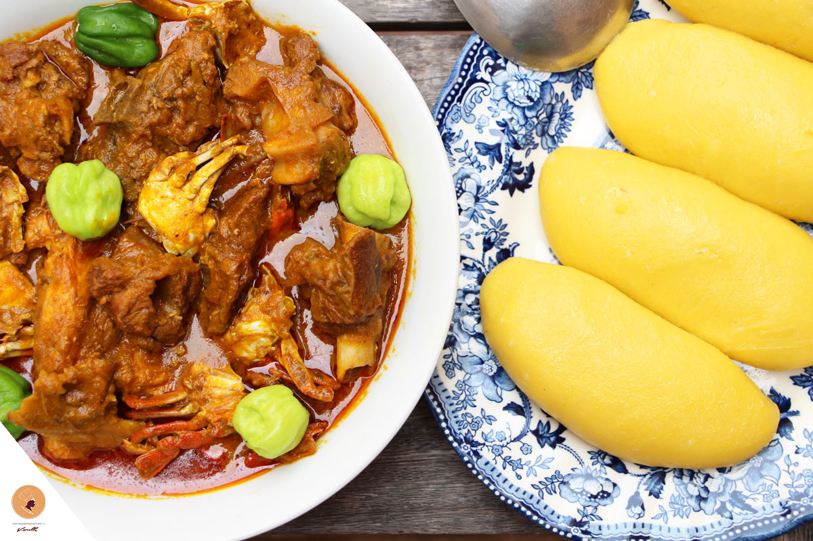
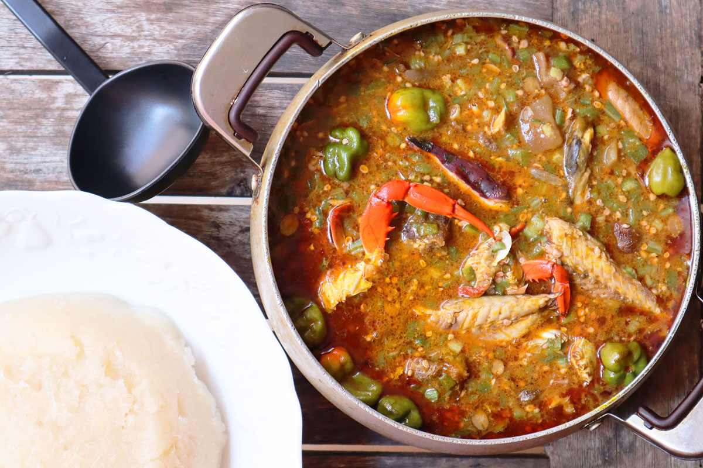
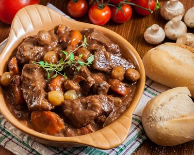
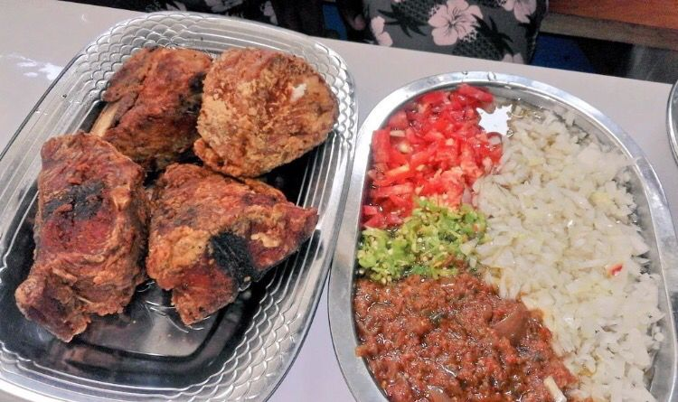
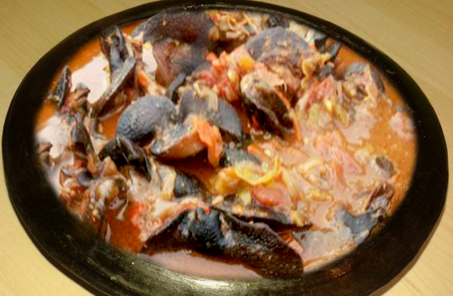

La Côte d’Ivoire accueille toujours ses visiteurs avec de bons plats originaux et chaque région du pays propose une spécialité gastronomique très riche et appréciée qui constitue une attraction pour de nombreux visiteurs.
Vous remarquerez que dans toutes les régions du pays, les peuples ont plusieurs spécialités gastronomiques mais il y en a toujours une qui prédomine et fait l’unanimité.
Nous allons vous en montrer le meilleur de chaque région.
LE FOUTOU BANANE : SAVOUREUX AVEC UNE SAUCE GRAINE
Le foutou est un plat incontournable en Côte d’Ivoire, d’où il puise ses origines. Cette boule assez dense est confectionnée avec du manioc et de la banane plantain (ou de l’igname). Elle s’accompagne généralement d’une sauce graine, de couleur rouge, qui est préparée avec de la pulpe issue du fruit du palmier à huile. Il est courant d’ajouter de la viande de brousse (agouti) à cette recette pleine de goût. La préparation de ce mets est réputée pour être conviviale et chaleureuse !

LE PLACALI SAUCE GOMBO (OU KOPÈ) : UNE SPÉCIALITÉ TRÈS PRISÉE
Le placali est à l’honneur à Abidjan où de nombreuses personnes l’affectionnent. Lors de sa préparation, la farine de manioc est versée dans de l’eau bouillante puis travaillée jusqu’à l’obtention d’une pâte homogène, compacte et bien élastique. Le placali est accompagné de poisson ou de viande et nappé d’une sauce gombo (à la texture gluante). Celle-ci peut être remplacée par une sauce d’arachide ou de noix de palme aux crevettes.

LE SOKOSSOKO DE BŒUF
Ce plat originaire de Côte d’Ivoire est un succulent sauté de bœuf aux oignons et à la tomate. Les Ivoiriens aiment le confectionner lorsqu’ils manquent de temps. En effet, le sokossoko de bœuf est très rapide à réaliser et reste une recette idéale pour une courte pause repas.

LE GARBA : UN PLAT NATIONAL
Le garba fait partie des symboles de la cuisine ivoirienne et se vend essentiellement dans des échoppes de rue en Côte d’Ivoire. Ce mets emblématique se compose de thon rouge frit et s’accompagne de semoule de manioc.

Kédjénou d'escargots épicés
Facile à réaliser, le kédjénou d’escargots épicés est un plat très apprécié par les ivoiriens. Cette recette est originaire d’Alépé, une ville du nord-est de la Côte d’Ivoire.
